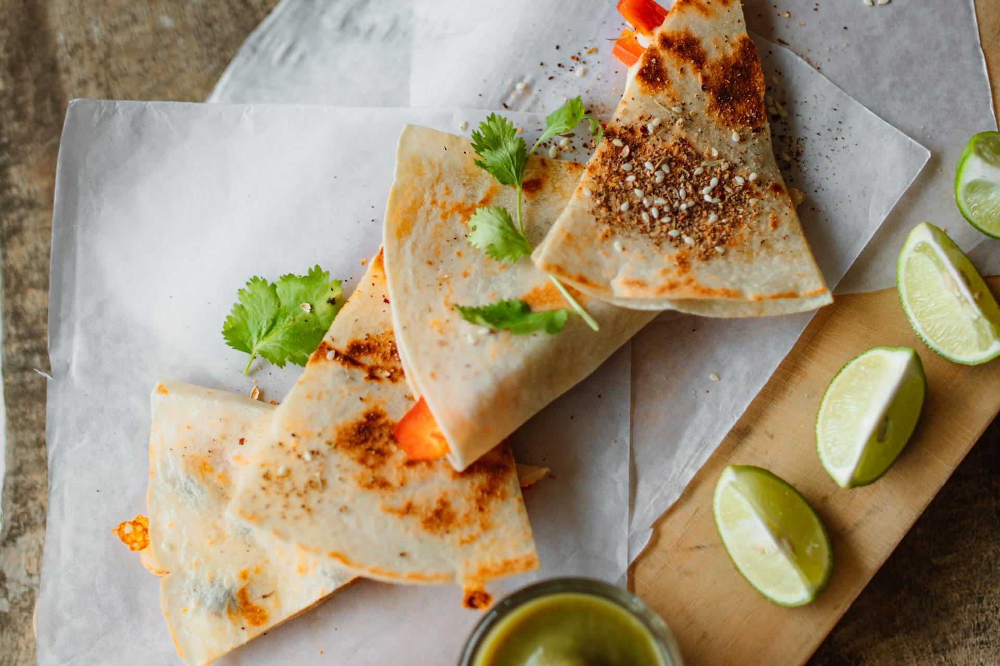

In a large skillet over medium-high heat, heat 1 tbsp. neutral oil. Add peppers and onion and season with salt. Cook until soft, 5 minutes. Transfer to a plate.
Add 1 tbsp. neutral oil to pan and heat over medium-high heat. Add chicken to pan and season with chili powder, cumin, dried oregano, and ½ teaspoon salt. Cook, stirring occasionally, until golden and cooked through, 8 minutes. Transfer to a plate. Wipe out skillet.
Add 1 tbsp. neutral in skillet. Add 1 flour tortilla to skillet and top half of the tortilla with a heavy sprinkling of both cheeses, ¼ of the cooked chicken mixture, ¼ of the pepper-onion mixture, a few slices of avocado, and a sprinkling of scallions. Fold the other half of the tortilla over and cook, flipping once, until golden, 3 minutes per side.
Repeat with remaining oil, tortillas, chicken, pepper-onion mixture, avocado, and scallions to make 4 quesadillas.
Slice into wedges and serve with sour cream.